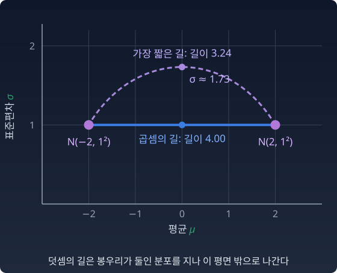

같은 두 끝점 a = (0.6, 0.3, 0.1), b = (0.1, 0.2, 0.7)의 가운데를 두 규칙으로 구하면 다른 점이 나온다. 섞으면(덧셈의 길) (0.35, 0.25, 0.4), 곱하고 다시 나누면(곱셈의 길) (0.325, 0.325, 0.351)이다. 두 가운데는 각각 무엇을 뜻하는가? 칸이 셋뿐이면 뜻이 잘 보이지 않으니, 칸을 늘려 보자.
봉우리 두 개
차이를 가장 잘 보여 주는 무대는 칸이 많은 분포다. −6에서 6까지를 0.25 간격으로 나눈 49칸을 한 줄로 늘어놓고, 그 위에 봉우리를 하나씩 가진 두 분포를 놓는다. a는 −2 근처에, b는 +2 근처에 봉우리가 있다. 폭(표준편차)은 둘 다 1이다.
m-중간점(덧셈의 중간)은 두 봉우리가 다 살아 있다. “왼쪽일 수도 있고 오른쪽일 수도 있다”, 곧 OR.
e-중간점(곱셈의 중간)은 봉우리가 하나다. 자리는 0, 폭은 그대로 1이다. a와 b가 둘 다 "있을 만하다"고 인정하는 곳은 두 봉우리 사이의 가운데뿐이다. “개이면서 동시에 고양이처럼 보이는 것만 남는다”, 곧 AND.
이 무대에서 Z1/2는 0.135다. 기하평균을 낸 값을 다 더해도 0.135밖에 안 된다는 뜻이다. 두 분포가 함께 인정하는 영역이 원래 좁았다. 곱셈은 그 좁은 영역을 7배 넘게 부풀려 한 분포로 만든다. Z는 두 분포가 얼마나 겹치는지 재는 숫자이기도 하다. 두 분포가 같으면 1, 겹치는 곳이 없으면 0이다.
직접 움직여 보기
불러오는 중…
한 가지 조심할 것이 있다. "e-중간점은 언제나 m-중간점보다 뾰족하다"는 봉우리 두 개인 이 무대에서만 맞다. 결과가 셋뿐인 분포에서는 자주 뒤집힌다. 얼마나 퍼졌는지는 엔트로피(분포가 얼마나 고르게 퍼졌는지 재는 값, H = −Σ p log p)로 잰다. 어느 쪽이 더 퍼지는지, 왜 뒤집히는지는 아래 문제 8과 9에서 끝까지 따라간다.
직선이 두 개라는 것
유클리드 공간이라면 두 점 사이의 곧은 길은 하나뿐이다. 그랬다면 정보기하학은 필요 없었을 것이다.
곧은 길이 두 개라는 것이 곧 공간이 휘었다는 뜻은 아니다. 심플렉스는 확률 좌표에서 보면 평평하다. m-길이 곧은 선이다. 로그 비 좌표 θ에서 보아도 평평하다. e-길이 곧은 선이다. 두 눈 각각에게 평평한 공간, 이것을 쌍대평탄(dually flat)이라 부른다. 직선이 두 개라는 건 “무엇을 곧다고 부를지” 정하는 규칙이 두 개라는 신호다. 이 규칙을 접속(connection)이라 부른다.
거리를 재는 자는 여전히 하나다. 피셔 정보(분포를 조금 움직였을 때 확률이 얼마나 민감하게 바뀌는지 재는 양)가 만드는, 어느 쪽에서 재든 값이 같은 대칭인 자다. 그 자로 잰 최단 경로는 m-길도 e-길도 아닌 세 번째 길이다.
정규분포끼리만 다닌다면 이 세 번째 길을 그림으로 볼 수 있다. 가로축을 평균 μ, 세로축을 표준편차 σ로 잡으면 정규분포 하나가 평면 위의 점 하나다. 위의 두 봉우리를 정규분포 N(−2, 1²)과 N(2, 1²)로 보자. 곱셈의 길은 σ = 1인 채로 가로로 간다. 곱셈이 봉우리를 폭 그대로 옮기기만 한 것을 위젯에서 보았다. 정규분포만 지나는 가장 짧은 길은 위로 부풀어, 가운데에서 σ = √3 ≈ 1.73까지 넓어진 분포를 지난다. 피셔 정보의 자로 재면 곱셈의 길은 4.00, 가장 짧은 길은 3.24다. 덧셈의 길은 봉우리가 둘인 분포를 지나므로 이 평면 밖으로 나간다.

정규분포 평면 위의 곱셈의 길과 가장 짧은 길
e-길과 m-길은 "가장 짧은 길"이 아니라 각자의 규칙에서 "방향을 바꾸지 않고 곧게 가는 길"이다.
파이썬
import numpy as np
x = np.linspace(-6, 6, 49) # 한 줄로 늘어선 49칸
def bump(mu, s): # 칸 위의 가우시안 봉우리
r = np.exp(-(x - mu)**2 / (2 * s**2))
return r / r.sum()
def H(p):
return -np.sum(p * np.log(p))
a, b = bump(-2, 1), bump(2, 1)
m = 0.5 * a + 0.5 * b # m-중간점 (산술평균)
r = np.sqrt(a * b); Z = r.sum(); e = r / Z # e-중간점 (기하평균 / Z)
print(f"끝점 엔트로피 H(a)={H(a):.3f} H(b)={H(b):.3f}")
print(f"m-중간점 H={H(m):.3f} 봉우리 위치 {x[np.argmax(m)]:+.1f}")
print(f"e-중간점 H={H(e):.3f} 평균 {np.round(np.sum(x * e), 6) + 0.0:+.2f} 표준편차 {np.sqrt(np.sum(x**2 * e)):.2f}")
print(f"Z = {Z:.4f} exp(-2) = {np.exp(-2):.4f}")
# 끝점 엔트로피 H(a)=2.805 H(b)=2.805
# m-중간점 H=3.438 봉우리 위치 -2.0
# e-중간점 H=2.805 평균 +0.00 표준편차 1.00
# Z = 0.1353 exp(-2) = 0.1353
e-중간점은 끝점과 같은 모양의 봉우리를 가운데로 옮긴 것이다. 엔트로피도 끝점과 같다. m-중간점은 봉우리 둘을 품느라 엔트로피가 0.63 더 크다. Z = exp(−2)는 우연이 아니다. 폭이 같은 정규분포 두 개라면 반씩 곱할 때의 정규화 상수는 두 중심의 거리와 폭만으로 정해진다.
“산술평균은 혼합(앙상블)의 씨앗이고, 기하평균은 곱셈(베이즈 갱신)의 씨앗이다. 곧은 길이 둘인 것은 공간이 휘어서가 아니라, 곧음의 규칙이 둘이기 때문이다.”
인물 이야기 — 아마리 슌이치와 “두 개의 접속”
아마리 슌이치
1958년, 도쿄 대학. 수리공학 석사과정의 아마리 슌이치(甘利俊一, Amari Shun-ichi)는 통계 세미나에서 쿨백(S. Kullback)의 책 『정보 이론과 통계』를 읽고 있었다. 모리구치 시게이치(森口繁一) 교수가 한 가지를 귀띔했다. 피셔 정보를 리만 계량(곳마다 작은 걸음의 길이를 재는 규칙)으로 볼 수 있지 않겠느냐는 것. 라오(C. R. Rao)가 1945년에 내놓은 생각이었다.
젊은 아마리는 정규분포 N(μ, σ²)의 공간에서 그 계량과 곡률을 계산해 보았다. 곡률이 어디서나 같은 음수였다. 비유클리드 기하의 유명한 모형인 푸앵카레 반평면이 정규분포 안에 숨어 있었다. 아마리는 뒷날 그 아름다움에 매료되었고, 아름다운 구조라면 실제로도 중요한 뜻이 있으리라 믿었지만 그 뜻을 더 밀고 나가지 못했다고 회고했다. 그는 이 물음을 접어 두고 네트워크의 연결 구조(위상, topology), 재료 속 결함(전위)의 기하학, 정보 시스템과 신경망의 학습으로 옮겨 갔다.
물음을 다시 연 것은 열다섯 해쯤 뒤, 에프론(Bradley Efron)의 1975년 논문이었다. 에프론은 피셔가 발표하지 않고 남긴 옛 계산을 파고들어 “통계적 곡률”(모형 가족이 지수족에서 얼마나 휘어져 벗어났는지 재는 양)을 정의하고, 추정의 높은 차수 효율이 이 곡률로 정해진다는 것을 보였다. 같은 학술지에 함께 실린 토론에서 다위드(A. P. Dawid)는 이 계산에 숨은 "곧음의 규칙"이 지수(exponential) 접속이라는 것을 짚고, 그 짝으로 혼합(mixture) 접속을 내놓았다. 이 장의 e와 m이 여기서 나왔다.
아마리는 이 논문과 토론에 자극받아 연구를 다시 시작했다. 그리고 두 접속을 잇는 한 가족을 세웠다. α(알파)라는 숫자 하나로 매겨지는 α-접속이다. α = 1이 e-접속, α = −1이 m-접속, α = 0이 계량 자신의 접속(레비-치비타)이다. α와 −α는 서로 쌍대(한쪽이 정해지면 다른 쪽이 정해지는 짝)다. 이 장에서 본 곱셈의 길과 덧셈의 길이 바로 α = ±1, 평탄한 특별한 짝이 만드는 곧은 길이다.
뒤에 아마리는 소련의 첸초프(N. N. Chentsov)가 1972년 러시아어 책에서 같은 가족에 먼저 닿았음을 알게 되었다. 첸초프는 충분통계량(데이터에서 모수에 관한 정보를 빠짐없이 담은 요약값)으로 바꿔도 변하지 않는 계량과 접속을 모두 찾았다. 계량은 피셔 정보 하나(상수배 제외), 접속은 α-가족이었다. 이 책은 1982년에 영어로 옮겨지고서야 서방에 널리 알려졌다.
1982년 아마리는 곡지수족(지수족, 곧 log p가 자연모수의 일차식에서 정규화 항을 뺀 꼴인 분포 모임 안에 휘어져 들어앉은 작은 가족)의 곡률과 정보 손실에 관한 논문을 Annals of Statistics에 실었다. 같은 해 나가오카 히로시와 함께 쌍대평탄한 공간의 이론과 피타고라스 정리를 정리한 보고서를 썼는데, 이 보고서는 끝내 학술지에 실리지 못했다. 아마리의 회고에 따르면 Annals of Probability의 편집자는 심사자 일곱 명에게 부탁했지만 아무도 진지하게 읽지 않았다며 논문을 거둬 달라고 했고, 다른 확률론 학술지의 심사자는 통계와 미분기하 사이에는 본질적인 관계가 없으니 쓸모없는 논문이라는 편지를 보냈다. 몇 해 뒤 IEEE Transactions on Information Theory의 심사자는 이제 세계에 널리 알려진 이론이라 새로운 것이 별로 없다고 했다. 그사이 1984년 런던에서 콕스(D. Cox)가 이 주제로 워크숍을 열었고, 1985년 아마리의 강의록 Differential-Geometrical Methods in Statistics가 나왔기 때문이다. 그 강의록이 "정보기하학(information geometry)"이라는 분야에 체계를 주었다. 1998년 아마리는 이 기하학을 신경망 학습으로 되가져와 자연 기울기(natural gradient)를 내놓는다. 석사과정 때 접어 둔 물음이 40년에 걸쳐 확률, 기하학, 학습을 잇는 이론이 되었다.
문제 8. 심사위원 두 명의 표
노래 경연에서 심사위원 두 명이 후보 세 명에게 표를 나눠 주었다. 심사위원 A는 (0.7, 0.2, 0.1), 심사위원 B는 (0.1, 0.2, 0.7)의 비율이다. (가) 두 비율을 후보마다 평균하면 후보 2의 몫은? (나) 후보마다 두 비율을 곱해 제곱근을 씌우고, 세 몫의 합이 1이 되게 다시 나누면 후보 2의 몫은? (다) 두 규칙에서 1등 후보의 몫을 비교하라. 어느 규칙의 결과가 더 고른가? 왜 그런가?
함께 풀기
김민준
(가)는 (0.4, 0.2, 0.4)라서 후보 2는 0.2예요. (나)는 제곱근이 (0.265, 0.2, 0.265)이고 합이 0.729니까 나누면 (0.363, 0.274, 0.363), 후보 2가 0.274예요.
이서연
이상해요. 두 심사위원 모두 후보 2에게 0.2를 줬어요. 아무도 더 주지 않았는데 0.274가 됐어요.
선생님
후보 1은요? 두 사람이 준 몫의 산술평균과 기하평균을 견줘 봐요.
이서연
0.7과 0.1이요. 산술평균은 0.4인데 기하평균은 √0.07 = 0.265예요. 두 사람 말이 크게 어긋나서 많이 깎였어요. 후보 2는 0.2와 0.2라 기하평균도 0.2 그대로고요.
이서연
그러니까 곱하는 단계에서 후보 1과 3이 깎이고, 합을 1로 맞추려고 다시 나누면서 안 깎인 후보 2의 몫이 오른 거예요. 누가 후보 2에게 더 준 게 아니라, 나머지가 줄어든 만큼 커진 거네요.
김민준
(다)는 1등 몫이 섞으면 0.4, 곱하면 0.363이라 곱한 쪽이 더 고르네요. 깎인 후보가 마침 1등 둘이었으니까요.
선생님
그래요. 곱셈은 두 분포가 어긋나는 칸을 깎아요. 그 칸이 큰 칸이면 결과는 오히려 고르게 돼요.
김민준
기말 성적을 두 교수님 채점의 기하평균으로 매긴다고 생각하면 되겠네요. 두 분 점수가 크게 갈리는 학생만 깎이는데, 그게 상위권이면 반 전체 점수가 오히려 고르게 돼요.
문제 9. e-중간점은 언제 더 평평한가 (킬러)
결과가 셋인 두 분포 a, b와 t = ½의 두 중간점 m = (a + b)/2, e ∝ √(a·b)를 생각한다. (가) a = (0.6, 0.3, 0.1), b = (0.1, 0.2, 0.7)에서 H(m)과 H(e)를 비교하라. (나) 심플렉스에서 고르게 뽑은 쌍 가운데 H(e) > H(m)인 쌍의 비율을 추정하라. (다) 다음 항등식을 증명하고, 역전이 일어나기 위한 필요조건을 말하라. H(e) − H(m) = −(Ee[log m] − Em[log m]) − KL(e‖m). 여기서 Ee[·]는 분포 e로 평균 낸 값(기댓값)이고, KL(e‖m) = Σ e log(e/m)은 e와 m이 얼마나 다른지 재는 KL 발산이다. (라) 봉우리 하나짜리 가우시안 두 개라면 왜 역전이 없는가?
함께 풀기
김민준
(가)는 H(m) = 1.081, H(e) = 1.098이에요. 뒤집혔어요. 그런데 이건 운 나쁜 예외 같아요. 시드 0으로 랜덤 쌍 열 개를 뽑았는데 열 개 전부 H(e)가 더 작았거든요. 그러니까 “거의 항상” e-중간점이 더 뾰족하다고 봐도 될 것 같아요.
이서연
저는 반대로 증명을 해 보려고 했어요. 엔트로피는 오목함수니까 H(m) ≥ ½H(a) + ½H(b)가 성립해요. 그런데 거기서 H(e)로 넘어가는 다리가 안 놓여요.
선생님
서연 학생의 부등식은 m을 누구와 비교하고 있어요?
이서연
a와 b의 엔트로피 평균이요. e는 아예 안 나와요. 오목성은 "섞으면 퍼진다"만 말해 줘요. 곱셈 쪽에 대해선 아무 말도 안 하네요.
선생님
민준 학생, 열 개로 "거의 항상"을 말하려면 역전이 몇 % 이하여야 할까요?
김민준
역전 비율이 18%만 돼도 열 개 연속으로 안 나올 확률이 0.82¹⁰ ≈ 0.14니까… 열 개로는 못 가르네요. 백만 쌍으로 다시 돌릴게요.
김민준
0.182예요. 다섯 쌍에 한 쌍 가까이 뒤집혀요. 예외가 아니에요.
선생님
그럼 어떤 쌍이 뒤집히는지 봐야겠죠. e를 m으로 표현해 봐요. a = m + d, b = m − d로 두면요?
이서연
√(ab) = √(m² − d²) = m·√(1 − (d/m)²)예요. 그러니까 ei는 mi에 si = √(1 − (di/mi)²)를 곱하고 다시 정규화한 거예요. 두 분포가 크게 어긋나는 칸일수록 s가 작아서 많이 깎여요.
선생님
좋아요. e가 m을 칸마다 다시 가중한 분포라는 것만 쓰면 (다)가 나와요.
이서연
H(e) = −Σ e log e이고, log e = log m + log(e/m)이니까 H(e) = −Ee[log m] − Σ e log(e/m) = −Ee[log m] − KL(e‖m)이요. 여기서 H(m) = −Em[log m]을 빼면 항등식이에요. a, b와도 상관없이 성립하네요.
이서연
KL(e‖m) ≥ 0이니까, H(e)가 H(m)보다 크려면 첫째 항이 양수여야 해요. Ee[log m] < Em[log m]. e가 m 기준으로 “확률이 작은 칸” 쪽으로 무게를 옮겨야 해요. 그러려면 깎이는 칸이 원래 큰 칸이어야 하고요.
김민준
(가)에서 보면 s가 (0.70, 0.98, 0.66)이에요. m = (0.35, 0.25, 0.4)에서 큰 두 칸, 1번과 3번이 깎이고 제일 작은 2번 칸은 거의 안 깎여요. 그러니 평평해진 거네요. 백만 쌍에서도 역전인데 첫째 항이 음수가 아닌 쌍은 0개예요.
선생님
필요조건이지 충분조건은 아니에요. 첫째 항이 양수여도 KL(e‖m)이 더 크면 역전이 안 일어나요. 그럼 (라)는요?
김민준
봉우리 두 개 무대에서는 가운데 칸이 m에선 작은데, 거기가 두 분포가 제일 잘 맞는 곳이라 안 깎여요. 대신 두 봉우리 바깥 꼬리는 한쪽만 있어서 거의 다 깎이고요. 필요조건만으론 이게 어느 쪽으로 갈지 딱 안 나오네요.
이서연
가우시안이면 식으로 끝낼 수 있어요. 문제 6에서 1/σe² = ½(1/σa² + 1/σb²)였으니 σe²는 σa²과 σb²의 조화평균이에요. 조화평균 ≤ 기하평균이라 σe ≤ √(σaσb), 그래서 H(e) ≤ ½H(a) + ½H(b)예요. 오른쪽은 제가 처음 쓴 오목성 부등식으로 H(m) 이하고요.
이서연
처음에 막혔던 다리가 가우시안에서만 놓이는 거예요. 곱셈이 가우시안 모양을 보존해 주니까요. 칸이 셋뿐이면 그런 보장이 없어요.
선생님
그래요. "e-중간점은 겹치는 부분만 남아서 뾰족하다"는 그림은 봉우리가 뚜렷한 분포의 이야기예요. 일반적으로 곱셈이 하는 일은 "두 분포가 어긋나는 칸을 깎는다"이고, 그 칸이 큰 칸이면 오히려 평평해져요. 민준 학생은 표본을 늘려 반례의 크기를 쟀고, 서연 학생은 항등식으로 어디가 깎이는지 봤어요.
김민준
아까 심사위원 문제랑 같네요. 두 분이 똑같이 준 후보 2만 안 깎이고 어긋난 큰 칸이 깎여서 고르게 됐던 것처럼, 여기서도 큰 두 칸이 깎여서 평평해진 거예요.
이서연
해석학에서 "반례 하나로 명제는 죽지만 반례가 어디 사는지 알아야 명제를 고칠 수 있다"던 말이 이거였어요.